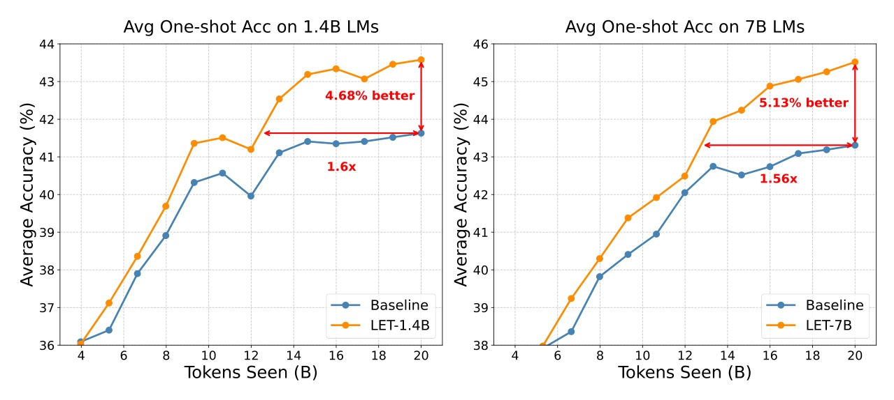
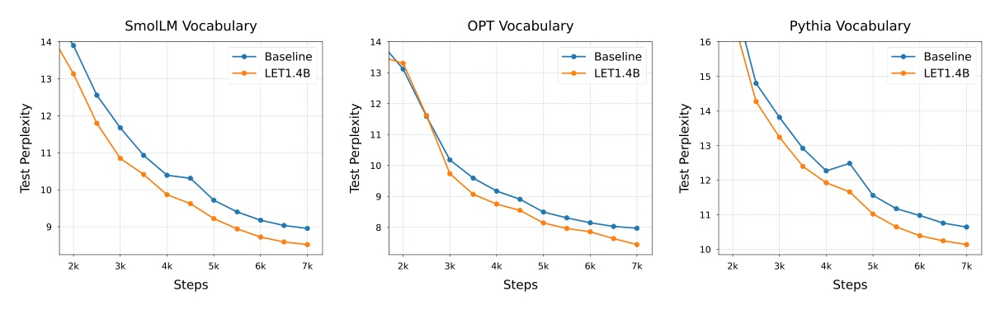
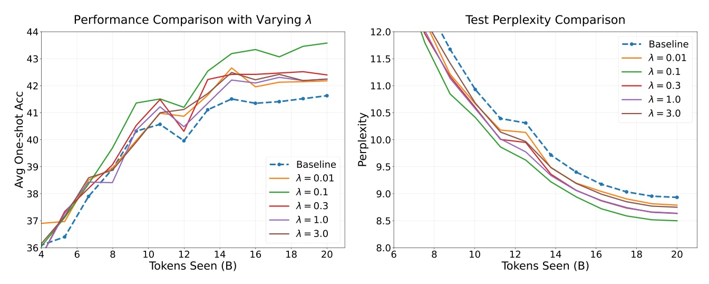
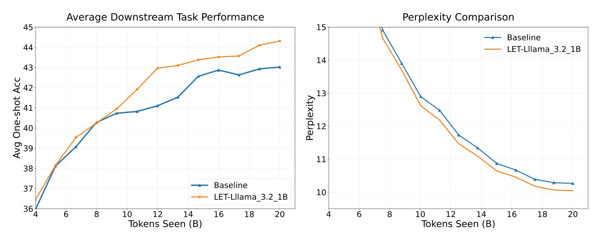

LET LLMs learn earlier - then train faster and better

Use a small pretrained model's final representation to shape an early layer of a larger model - only while the large model is still learning its foundations.
L2E works because a weak teacher's information enters before the target's remaining transformation stack - so the target can adapt and refine it instead of being pinned to it.
| Target | Method | Avg. accuracy |
|---|---|---|
| 1.4B | Baseline | 41.6 |
| 1.4B | SALT | 42.9 |
| 1.4B | LET | 43.6 |
| 7B | Baseline | 43.3 |
| 7B | SALT | 44.7 |
| 7B | LET | 45.5 |


A small teacher helps only if it is treated as temporary representation scaffolding, not as a target to match as strongly and as long as possible.
| Target | Method | Throughput | Wall-clock ratio | Peak VRAM ratio |
|---|---|---|---|---|
| 1.4B | Baseline | 224.2k | 1.000 | 1.000 |
| 1.4B | LET | 220.8k | 1.0154 | 1.1544 |
| 7B | Baseline | 105.9k | 1.000 | 1.000 |
| 7B | LET | 104.2k | 1.0163 | 1.0944 |

The core idea is to guide the early layers of an LLM during early training using representations from the late layers of a pretrained model.
重點不是讓大模型模仿小模型的輸出，而是在早期用小模型末層表徵引導大模型的早層。Abstract p.1
The subsequent layers retain sufficient capacity to adapt and refine these representations through the learning dynamics of training.
對齊放在早層，才保留後段層數重新加工弱教師訊號。§3.3 p.8
Continued alignment with a much smaller teacher model can actually hinder further improvement.
當學生的能力已經提高，繼續對齊遠小於它的教師反而會阻礙後續進步。Appendix C p.21
When employing GPT-2 as the small model T, LET underperforms the baseline.
教師品質不是可忽略的細節；使用 GPT-2 作為小模型時，LET 仍低於 baseline。Appendix I p.27
ICLR 2026 Poster - Ji Zhao et al. - arXiv:2602.05393